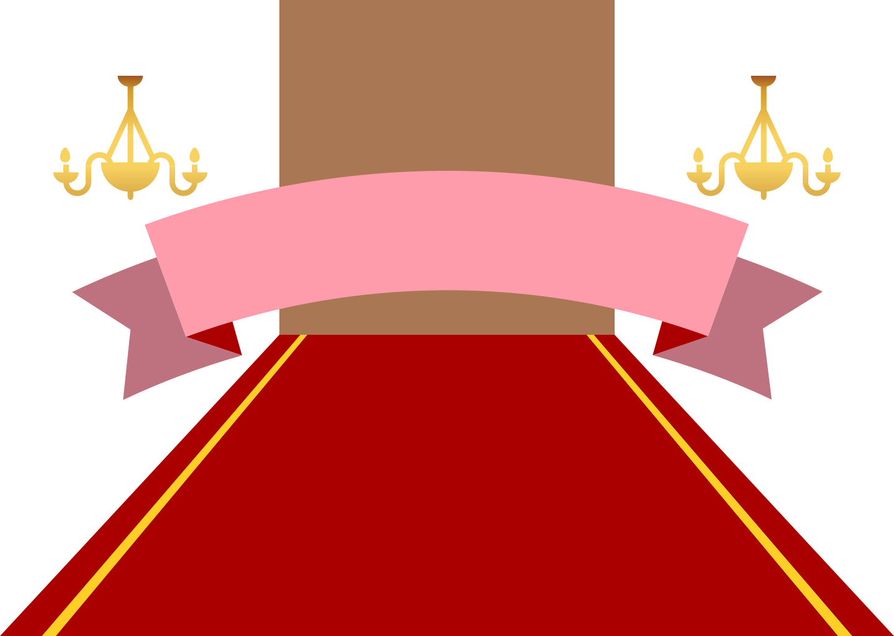

{% extends 'base.html' %} {% block body %}

<div class="container-background">
  

  <!-- <div class="home-container"> -->
  <!-- <h1 class="starting-title" data-i18n="starting-title"></h1>
    <p class="starting-description" data-i18n="starting-description"></p> -->
  <!-- </div> -->

  <div class="butler-container">
    <div class="butler-1"></div>
    <a id="take-test-button" class="starting-button"><i class="fa-solid fa-chevron-down"></i>
    </a>
    <div class="butler-2"></div>
  </div>
</div>

<div id="about-us" class="about-us">
  <h1 style="padding-top: 60px">About Us</h1>

  <button id="scroll-top-btn">
    <i data-lucide="chevrons-up"></i>
  </button>
</div>
<script src="https://code.jquery.com/jquery-3.6.0.min.js"></script>
<script>
  document.addEventListener("DOMContentLoaded", (event) => {
    lucide.createIcons();
  });

  document
    .getElementById("scroll-top-btn")
    .addEventListener("click", function () {
      window.scrollTo({ top: 0, behavior: "smooth" });
    });

  $(document).ready(function () {
    let animationTriggered = false;
    let lastScrollTop = 0;

    function animateButlersOut(callback) {
      $(".butler-1").css("transform", "translateX(-150%)");
      $(".butler-2").css("transform", "translateX(150%)");
      // setTimeout(callback, 100); // Adjust the timeout duration as needed
    }

    function animateButlersIn() {
      $(".butler-1").css("transform", "translateX(0)");
      $(".butler-2").css("transform", "translateX(0)");
    }

    function scrollToAboutUs() {
      $("html, body").animate(
        {
          scrollTop: $("#about-us").offset().top,
        },
        1000
      );
      $("#about-us").fadeIn(1000);
    }

    function scrollToTop() {
      $("html, body").animate(
        {
          scrollTop: 0,
        },
        1000
      );
    }

    // Click event on the button
    $("#take-test-button").click(function () {
      if (!animationTriggered) {
        animationTriggered = true;
        animateButlersOut();
        scrollToAboutUs();
      }
    });

    // Scroll event to trigger the animation
    $(window).scroll(function () {
      let st = $(this).scrollTop();
      if (st > lastScrollTop) {
        // Scrolling down
        if (!animationTriggered && st > 50) {
          // Adjust the scroll threshold as needed
          animationTriggered = true;
          animateButlersOut();
          scrollToAboutUs();
        }
      } else {
        // Scrolling up
        if (animationTriggered && st < 50) {
          // Adjust the scroll threshold as needed
          animationTriggered = false;
          animateButlersIn();
        }
      }
      lastScrollTop = st;
    });
  });
</script>

{% endblock %}